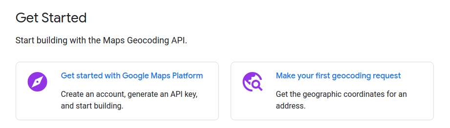
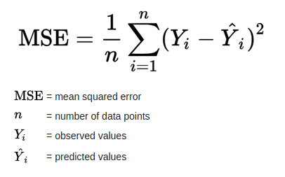
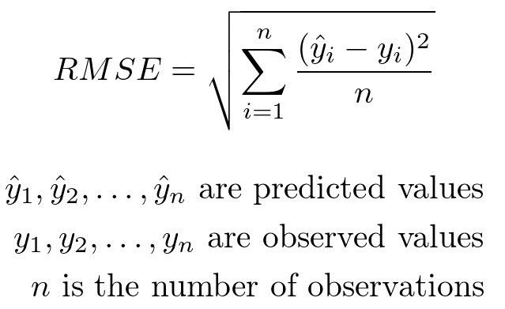
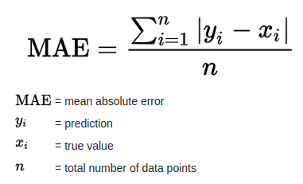
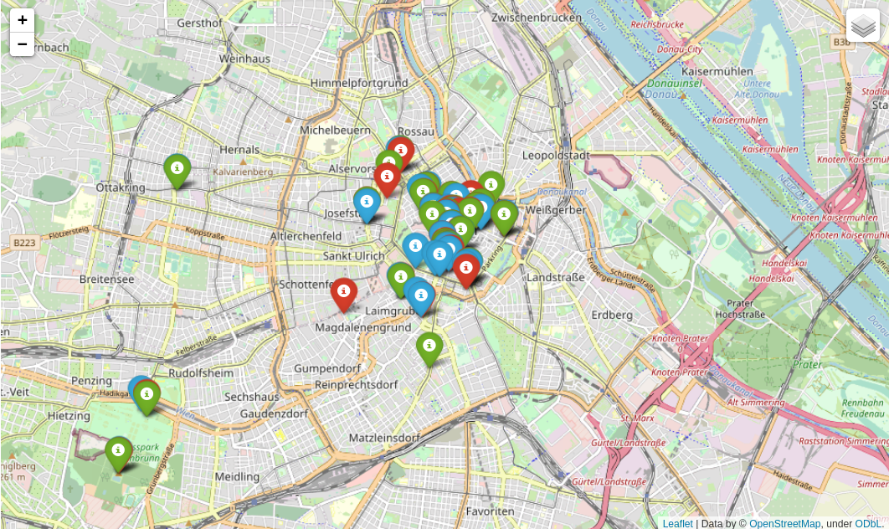

Lab 5 - Geocoding#
Th. 31.10.2024 15:00-17:00
1 - Geopy#
Geopy is a Python library that provides a simple interface for several geocoding web services.
1.1 - Choose a Geocoding Service#
Geopy supports various geocoding services, such as Google Maps, OpenStreetMap, and ArcGIS. Each service may have different usage policies and limitations. For example, some may require API keys. Geopy implemented the class for each of these services, and you can easily switch from one service’s API to another.
1.2 - Import and Choose a Geocoder:#
Import the geopy library and choose a geocoding service. For example, if you want to use the Nominatim geocoding service (which is based on OpenStreetMap data), you can do the following:
from geopy.geocoders import Nominatim
geolocator = Nominatim(user_agent="your_email")
If you want to use the Google Maps geocoding service, you can do the following:
GM_API_KEY = 'your_api_key'
from geopy.geocoders import GoogleV3
geolocator = GoogleV3(api_key=GM_API_KEY)
If you want to use the ArcGIS geocoding service, you can do the following:
from geopy.geocoders import ArcGIS
geolocator = ArcGIS()
1.3 - Geocode a single address#
address='Universitätsstraße 7, 1010 Wien'
ArcGIS:
from geopy.geocoders import ArcGIS
geolocator_arcgis = ArcGIS()
location = geolocator_arcgis.geocode(address)
print((location.latitude, location.longitude))
OpenStreetMap:
OpenStreetMap’s API is free of charge. You will need to give the email of your OSM account as input to the Nominatim class, instead of the API key.
from geopy.geocoders import Nominatim
## Set a higher timeout value (in seconds)
geolocator_osm = Nominatim(user_agent="xxxxx@gmail.com",timeout=10)
location = geolocator_osm.geocode(address)
print((location.latitude, location.longitude))
Google Maps:
Google Maps API includes more steps including setting up a billing account, so we are skipping this in class. More info here.

1.4 - Geocode a list of addresses and handle errors#
import pandas as pd
## this csv includes top 30 cafes in Vienna
## based on TripAdvisor ratings and number of reviews
## lat and lon columns are geocoded using Google Maps API
## with additional manual inspection, can be seen as ground truth
df = pd.read_csv('cafe_poi_30.csv')
df.head()
def service_geocode(g_locator, address):
location = g_locator.geocode(address)
if location!= None:
return (location.latitude, location.longitude)
else:
return None
## arcgis:
df['LAT_LON_arcgis'] = df['name'].apply(lambda x: service_geocode(geolocator_arcgis, (x+', Vienna')))
## OpenStreetMap:
df['LAT_LON_osm'] = df['name'].apply(lambda x: service_geocode(geolocator_osm,(x+', Vienna')))
df.head(10)
2 - Evaluation#
2.1 - Ground Truth Comparison#
Consider the lat lon columns in the dataframe as ground truth and compare the geocoding results against it.
2.2 - Error Metrics#
We can use metrics like:
Mean Squared Error (MSE)
Root Mean Squared Error (RMSE)
Mean Absolute Error (MAE)
to quantify the overall accuracy of the geocoding results.
 

from math import radians, sin, cos, asin, sqrt
import numpy as np
def haversine(lon1, lat1, lon2, lat2):
lon1, lat1, lon2, lat2 = map(radians, [lon1, lat1, lon2, lat2])
dlon = lon2 - lon1
dlat = lat2 - lat1
a = sin(dlat/2)**2 + cos(lat1) * cos(lat2) * sin(dlon/2)**2
return 2 * 6371 * asin(sqrt(a))
def mean_dist_off(df, col):
dist_off = []
for _,r in df.iterrows():
if r[col] != None:
dist_off.append(haversine(r['lon'],r['lat'], r[col][1], r[col][0]))
return np.mean(dist_off)
Compute the mean distance off for the two geocoders:
arcgis_mean_dist_off = mean_dist_off(df,'LAT_LON_arcgis')
arcgis_mean_dist_off
osm_mean_dist_off = mean_dist_off(df,'LAT_LON_osm')
osm_mean_dist_off
Compute the recall for the two geocoders:
recall_arcgis = len(df['LAT_LON_arcgis'].dropna())/len(df['name'])
recall_arcgis
recall_osm = len(df['LAT_LON_osm'].dropna())/len(df['name'])
recall_osm
2.3 - Visual Inspection#
Plot the geocoding results on a map and visually inspect the locations.
import folium
# add the first point as the start location and adjust the zoom level
cafe_map = folium.Map(location=(df['lat'][0], df['lon'][0]), zoom_start=13, tiles="OpenStreetMap")
# add ground truth as a feature group
feature_group_gt = folium.FeatureGroup("Ground Truth")
for _, r in df.iterrows():
popup = folium.Popup(r['name'])
feature_group_gt.add_child(folium.Marker(location=[r['lat'], r['lon']], icon=folium.Icon(color='red'), popup=popup))
# add arcgis results as a feature group
feature_group_arcgis = folium.FeatureGroup("ArcGIS Results")
for _, r in df.iterrows():
popup = folium.Popup(r['name'])
if r['LAT_LON_arcgis'] != None:
feature_group_arcgis.add_child(folium.Marker(location=[r['LAT_LON_arcgis'][0], r['LAT_LON_arcgis'][1]],
icon=folium.Icon(color='blue'), popup=popup))
# add OpenStreetMap results as a feature group
feature_group_osm = folium.FeatureGroup("OSM Results")
for _, r in df.iterrows():
popup = folium.Popup(r['name'])
if r['LAT_LON_osm'] != None:
feature_group_osm.add_child(folium.Marker(location=[r['LAT_LON_osm'][0], r['LAT_LON_osm'][1]],
icon=folium.Icon(color='green'), popup=popup))
## add all feature groups to the map
cafe_map.add_child(feature_group_gt)
cafe_map.add_child(feature_group_arcgis)
cafe_map.add_child(feature_group_osm)
## add layer control to the map
folium.LayerControl().add_to(cafe_map)
cafe_map

2.4 - Your observation based on the mean_dist_off, recall, and visual inspection:#
…
3 - Submission#
Try the code blocks above, complete section 2.4 and submit the .ipynb file on Moodle.